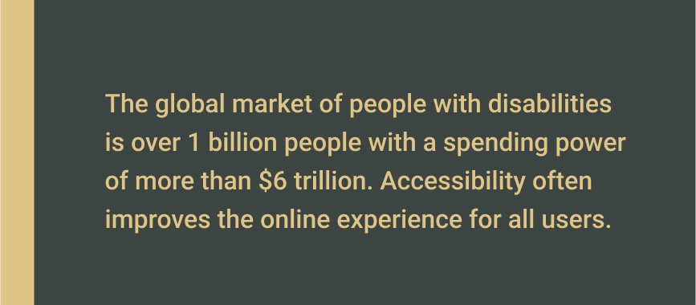

Accessibility
Usability test for Luxury Senior Living Brand
Project Scope
Team
A11y at Atria Team. Atria's Accessibility team
Role
User Experience Research and Analyst
Deliverables
Usability Test Report and Presentation to leadership, stakeholders, and product owners
Goals
- Showcase why usability testing and UX research is vital to accessibility
- Highlight key usability challenges for users that access the web with a screenreader
- Present the business case for why accessibility is essential for business growth and delivering accessible digital products
Problem Statement
Coterie Senior Living is a luxury senior living brand Atria Senior Living owns and operates with additional partners and investors. Atria's Digital Marketing and Product Innovation department designed and developed the Coterie Senior Living website and managed the digital aspect of the Coterie brand. Because of this, it is crucial to deliver a site that is exceptionally designed and functional and accessible to people with disabilities.
Since A11y at Atria's Accessibility team's inception in September of 2021, we have made a lot of progress on accessibility.
- Created an education matrix for accessibility so that our digital marketing organization has the foundational knowledge of accessibility and includes a track for domain-specific intermediate and advanced training and certification opportunities
- Implemented an automated accessibility process for software developers to test their code with Axe Dev Tools
- Implemented policy with Product Owners to ensure accessibility is in the Agile Definition of Done and project requirements
- Established User Interface design and Email design best practices for accessibility
The next step in our journey was to look at accessibility from a human-centered and inclusive design perspective.
- Exploring options for a user research platform that offers accessibility focused panels and access to users with disabilities
- We are setting the expectation that accessibility is foundational to UX and product development by ensuring users with disabilities are involved in user research and testing.
Why is this important?
Since Atria Senior Living’s customers are caregivers looking for senior living options for their loved ones and potential residents themselves, it is essential that the Coterie Senior Living website is accessible to the broadest audience possible and includes those with disabilities.
Business Value
Accessible digital products and customer experiences achieve the following for Atria Senior Living
- Successful customer experiences lead to a broader audience and incremental sales growth
- Inclusive organizational culture means higher employee satisfaction and improved retention rates
- Establishes Atria as a leader in Senior Living and positions the company ahead of the competition
As the number of seniors grows, there will be an increased need for senior living options. More seniors than ever use technology, and as we age, senses like our eyesight and hearing decline. It is crucial that Atria Senior Living and its brands keep up with technology and make it accessible to the broadest audience possible.
The Usability Test
Fable was our research partner for providing a participant to test the Coterie website. In addition, we asked the research participant to provide a comprehensive analysis of the Coterie Senior Living site.
- Interact with website content and provide an overview of their experience
- Interact with buttons and other interactive elements
- Test the Request an Appointment form and the Make Coterie Home form on the Contact Us page
The participant used an NVDA screen reader to access their Google Chrome Web Browser on their Windows desktop computer. The participant’s window displayed a Tablet view, and they recorded their face and their screen.

Synthesis
In collaboration with the team, we reviewed the footage and used whiteboarding to narrow down the critical usability issues.
Good Form
This test showed that our forms presented no accessibility issues to the research participant. Furthermore, since we adequately coded the webforms with semantic markup, the participant could request an appointment and use the contact form.
Areas for improvement
Most of the web content was accessible for the participant. However, upon reviewing the footage, we saw that the participant experienced some usability issues as they were going through the site's content.
Where am I?
The participant first heard the logo, contact us button, and phone number. Then, the participant had to use a shortcut provided by the screen reader to announce the page title.
Problem
A user that relies on a screen reader has no clue what page they are on.
Best Practice
Ensure the page title is the first thing the user hears when visiting a new page.
Cookie’s and Privacy Banner
We noticed that the participant never interacted with the cookies and privacy policy banner. Upon manual keyboard testing after the usability test, we found that the banner component was not accessible using a keyboard. Therefore, we concluded that this component was not accessible for users with vision or motor needs.
Problem
This issue could provoke significant privacy concerns for screen reader users because they are not informed about cookies being tracked on the site and don’t have the opportunity to consent.
Side note: not only was the banner not accessible to screen readers, upon further testing it was discovered the the banner was not accessible to the keyboard.
Best Practice
Ensure all components that are not within the normal flow of the HTML structure are accessible to screen readers and the keyboard.
Accordions: open or closed?
Three residence cards were available when the participant landed on the Residencies page. All of the cards had a View Details button. However, the View Details button did not announce the residence label. Therefore, the participant intended to go to a two-bedroom, two-bathroom residency but landed on the one-bedroom, one-bathroom residence.
Problem
Confusing to the user. They may think there is no content or that the component is broken.
Best Practice
Accordions should be in the collapsed state by default and only be in the expanded state when the user activates the accordion to access its content.
Wrong Residency Selected
The participant was brought to a page that had 3 residences cards available. All of the cards had the same “View Details” button. Because the View Details button on the residencies page did not announce the residence label, the participant inteded to go to a two bedroom, two bathroom residency but landed on the one bedroom, one bathroom residence.
Problem
The buttons only announce “View Details” and are not specific to the residency the participant requested.
Best Practice
The screen reader should have said, “View Details of One Bedroom, One Bathroom.” Adding atria labels, title, or name attributes to the links may help implement this functionality.
Floor Plan Issue #1
The participant encountered a floorplan graphic that was not accessible.
Problem
The user would miss important information since the screen reader cannot access a graphic without alternative text.
Best Practice
Ensure all images that are informative to the user have alterantive text or long descriptions. Any images that are purely decorative need to be hidden from the screen reader.
Floor Plan Issue #2
The participant encountered a floorplan PDF that was not accessible.
Problem
The document's creator did not structure the content in a logical order. The participant kept hearing "bullet" and "dash" repeatedly with no content associated.
Best Practice
If the content is on the web, then use native web technology to create the content and avoid PDFs. Leave that for the print. Alternatively, if PDFs are necessary, ensure the content is structured logically and test with a screen reader such as NVDA for Windows or VoiceOver for Mac. Follow up with a usability test with a user that relies on a screen reader to ensure it is accessible.
Deliverables
Fable Usability Test Presentation
In collaboration with the team, we created a presentation using Google Slides. Our target audience was our VP of Digital Marketing and Product Innovation, Director of Digital Marketing, the Director of Digital Product Management, and one of our Product Owners.
We began by introducing the Fable platform to leadership. Then we showed five slides that included three clips from the usability test that highlighted the critical issues.
Finally, we closed the presentation by including the business and UX case for why we need user testing and the next steps for implementing user research and testing for accessibility as part of our product development process.
Usability Test Report
I created a Usability Test Report for Coterie Senior Living along with the presentation. This report focused on documenting the research methods, tools, user demographics, usability issues, recommendations, and potential solutions that product teams can explore and prioritize in their product backlogs.
Impact and Key Takeaways
Because of this work, the A11y at Atria team was able to do the following:
- Found courses on creating accessible PDFs from Deque University. We added these courses to our Education Matrix and delivered them to the Creative Team to learn to mitigate and create accessible PDFs.
- We added accordions, links, and semantic markup to our list of features in our product backlog and roadmap so the A11y Team will guide on in our Digital A11y Playbook.
As a product designer, I learned that testing and getting feedback with users is important to delivering digital products that are inclusive and accessible.
As a team, we learned that alongside automated testing with tools like Axe-Dev tools or manual accessibility QA processes, it is also important to test products with real people with disabilities. These tools did not detect some of the issues found in the report. This experience was also an eye-opener for our team because we didn't know how these issues impact users that rely on a screen reader to access the web.
Accessibility Resources for UX Reserach
Below are some helpful resources to get started involving users with disabilities in your UX research and accessibility best practices.
- Involving Users in Evaluation Web Accessibility - W3C
- Introduction to Web Accessibility - W3C Course on EdX
- Deque University Courses
- How to Conduct Usability Studies for Accessibility - Nielsen Normal Group
Also, I want to give a shout out to Fable. While exploring platforms for user testing with people with disabilities, they offered an unmoderated, self-guided usability test with one of their screen reader users. Their product includes self-guided usability tests, moderated user interviews and prototype reviews, compatability tests, and QA sessions. They connect businesses with the real users and they are super friendly and able to help organizations along their journey to providing accessible digital products.
Fable: Build inclusive products